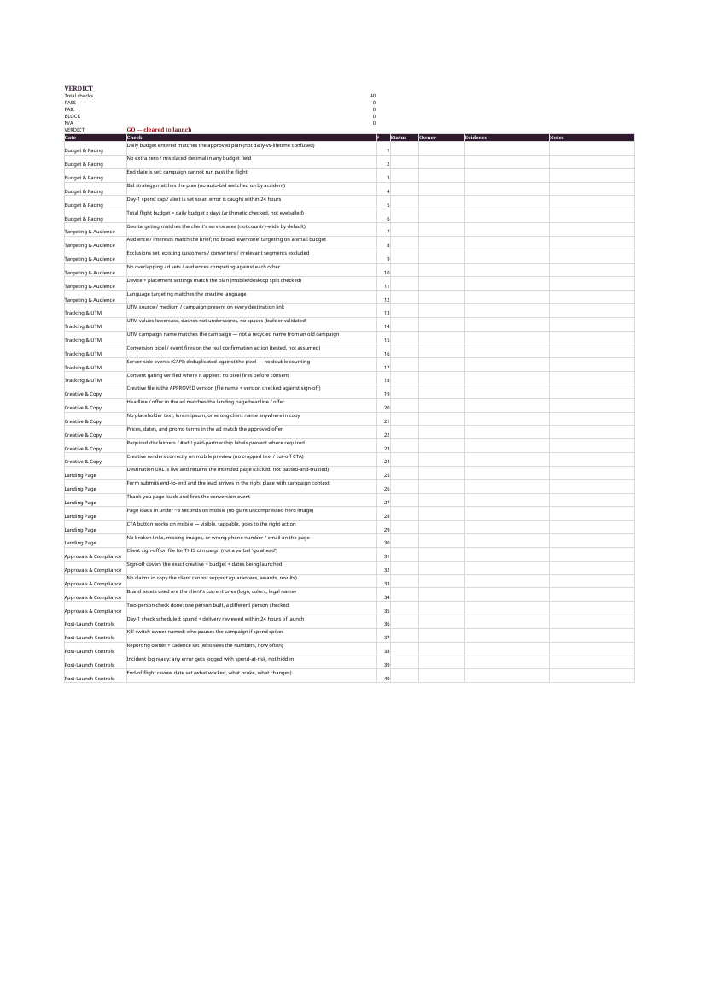
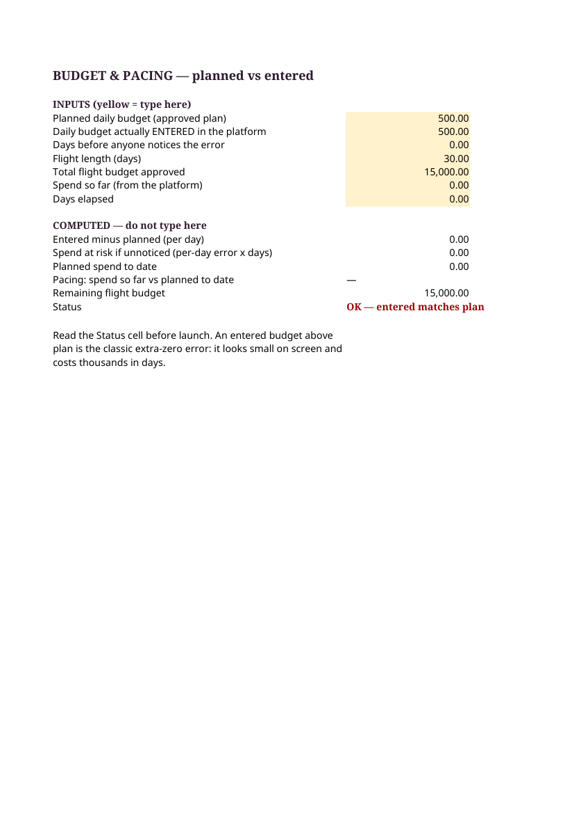

40 checks across 7 gates: a launch-gate system that catches budget, targeting, tracking, creative, and landing-page errors before launch.
$29 one-time
The budget with an extra zero. The campaign that kept running a week after the promo ended. The UTM name copied from last year’s campaign, so this year’s results landed in last year’s report. The landing page form that silently failed on mobile. Every agency has these stories. They show up as a make-good, an awkward client call, or a credit on next month’s invoice. In Fluency’s 2026 Agency AdOps Benchmark (170+ US agencies/in-house teams), 71% of ad ops teams said manual processes put client campaigns at risk, and 87% still pace budgets by hand. A Claravine survey found advertisers estimate the wrong creative reaches the wrong consumer about 25% of the time. DoubleVerify’s 2025 survey found marketers spend about 10 hours a week on manual campaign optimization.


24 files: 11 workbooks (EN, ZH, FR, ES, AR RTL, RU, DE, JA, PT, HI, IT) with 7 sheets each — START, PRE-LAUNCH-CHECKLIST (40 checks, formula verdict), BUDGET-PACING (spend-at-risk math), TRACKING-UTM (UTM builder + validation + pixel test log), INCIDENT-LOG, SIGN-OFF, WORKED-EXAMPLE — plus a ~2,500-word quick-start with cited sources, a complete fictional worked example where the check catches 3 errors before launch, 12 FAQs, 11 honest limits, inventory, pricing note, QA report, a free sample workbook, and 2 real screenshots.